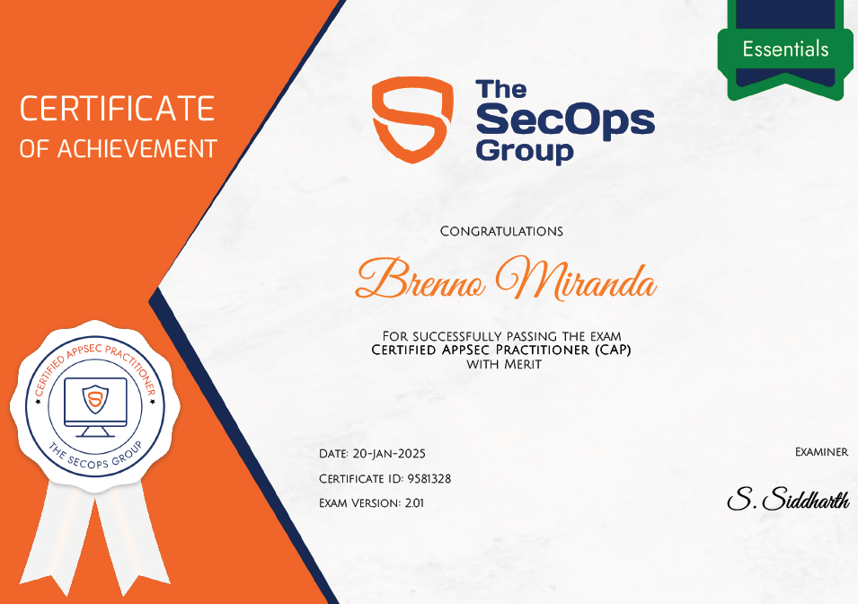

The CAP, Certified AppSec Practitioner, offered by The SecOps Group, is a certification focused on
application security, with emphasis on identifying common vulnerabilities in web applications, secure
development practices, and Secure Code Review.
On 01/20/2025, I took the exam and passed with merit.

Topics Covered
Regarding the certification scope, the following topics are covered:
- Input Validation Mechanisms
- Blacklisting
- Whitelisting
- Cross-Site Scripting
- SQL Injection
- XML External Entity Attack
- Cross-Site Request Forgery
- Encoding, Encryption And Hashing
- Authentication Related Vulnerabilities
- Brute force Attacks
- Password Storage and Password Policy
- Understanding Of OWASP Top 10 Vulnerabilities
- Security Best Practices And Hardening Mechanisms
- Same Origin Policy
- Security Headers
- TLS Security
- TLS Certificate Misconfiguration
- Symmetric and Asymmetric Ciphers
- Server-Side Request Forgery
- Authorization And Session Management Related Flaws
- Insecure Direct Object Reference (IDOR)
- Privilege Escalation
- Parameter Manipulation attacks
- Securing Cookies
- Insecure File Uploads
- Code Injection Vulnerabilities
- Business Logic Flaws
- Directory Traversal Vulnerabilities
- Security Misconfigurations
- Information Disclosure
- Vulnerable And Outdated Components
- Common Supply Chain Attacks And Prevention Methods
About the Exam
It is a 60-question multiple-choice exam with 60 minutes available for completion. If the candidate scores more than 60%, they will pass and become certified. If they score more than 80%, their certification will include "with merit", evidencing the high percentage of correct answers. The exam covers all topics mentioned in its scope, with questions ranging from code analysis to problem description and resolution.During the exam, camera and microphone access is required for physical environment validation and to prevent actions that violate the exam's code of ethics.
Study References for the Exam
- CAP Assistant | https://cap-assistant.ct.ws/
- Certified Appsec Practitioner (CAP) Notes | https://rkive.gitbook.io/certified-appsec-practitioner-cap
- Security on the web - Mozilla | https://developer.mozilla.org/en-US/docs/Web/Security
- Privacy on the web - Mozilla | https://developer.mozilla.org/en-US/docs/Web/Privacy
- HTTP Headers - Mozilla | https://developer.mozilla.org/en-US/docs/Web/HTTP/Headers
- TOP 10 - OWASP | https://owasp.org/Top10/
- OWASP 10 - TryHackMe | https://tryhackme.com/r/room/owasptop10
- Cryptography for Dummies - TryHackMe | https://tryhackme.com/r/room/cryptographyfordummies
- HTTP in Detail - TryHackMe | https://tryhackme.com/r/room/httpindetail
- APIsec University | https://www.apisecuniversity.com/#courses
- PortSwigger Academy | https://portswigger.net/web-security/all-topics